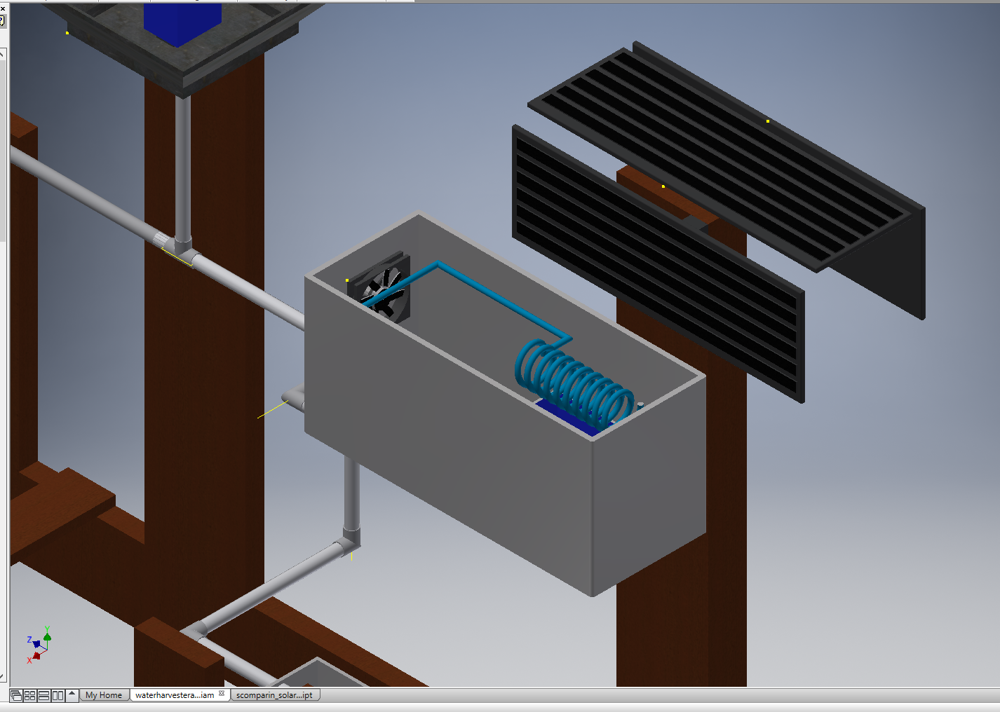
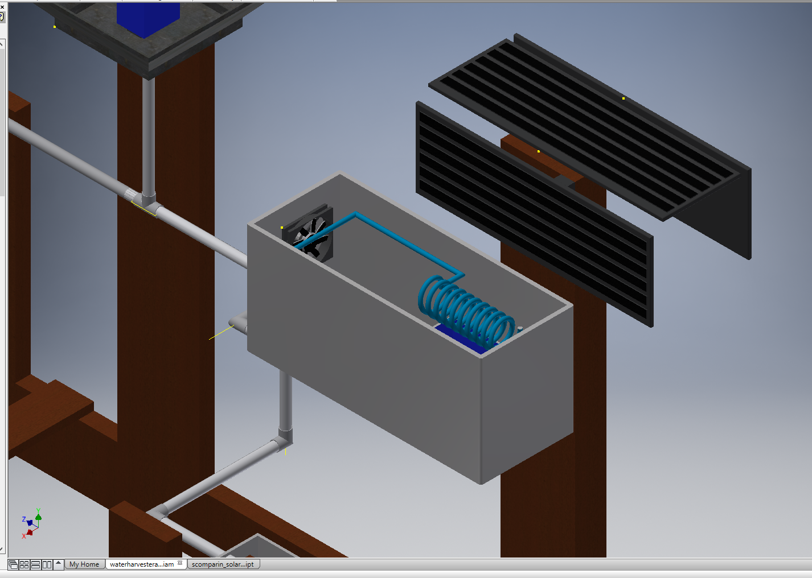

Entrepreneur Project May 2016, Introduction to Engineering Design
The objective of this project was simple- to design a complete new product or a major innovation. My team decided to try to solve a well known problem- lack of clean, drinkable water in third- world countries. We researched three previous solutions: the solar still , rain/dew collector, and atmospheric water generator (AWG). Afterwards, me and my teammate in IED modeled the solution in AutoDesk Inventor, and the two teammates in CSP designed a Cloud9 website to highlight the product. Our product is named AquaHarvester and it is a combination of the solar still, rain/dew collector, and AWG with some substantial innovations added. It is portable, with a wooden frame mounted on four large, rubber wheels. The solar still is made of solid, durable plastic, and features an adjustable height using pegs. The rain/dew collector were improved by using lightweight sheet metal instead of plastic, and the addition of a sealed ice container in the center of the metal. We overcame our greatest challenge, cost, by implementing solar panels and recycled materials such as a computer fan, water pump, and plastic tubing. I managed the product documentation and team collaboration, and was responsible for creating the improved frame and rain collector in AutoDesk Inventor. I was able to combine mechanical and environmental engineering skills by minimizing energy and material use within the project design, while increasing water output.


 
